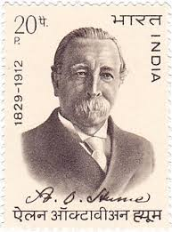
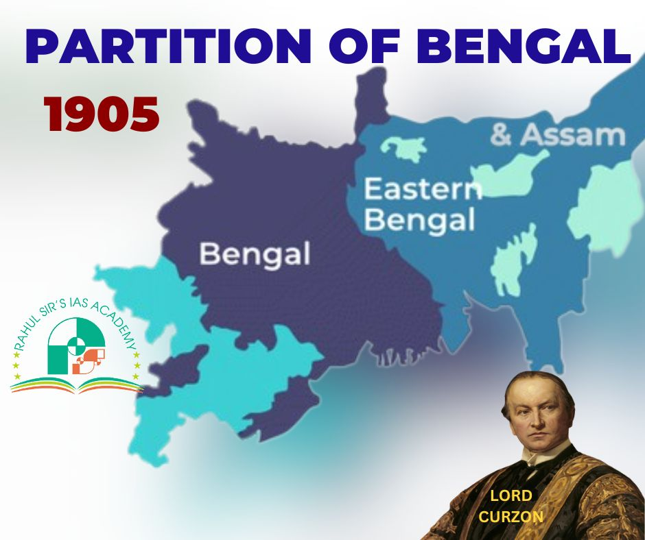
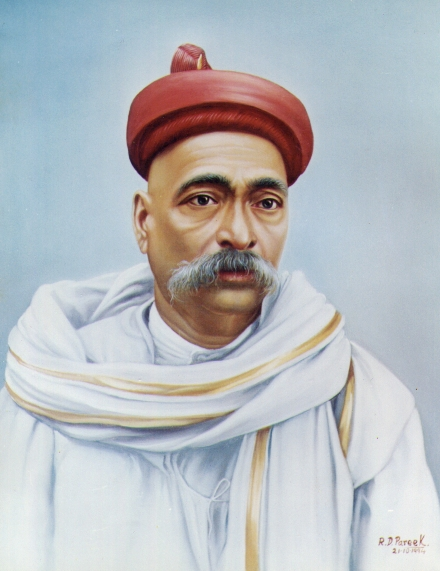
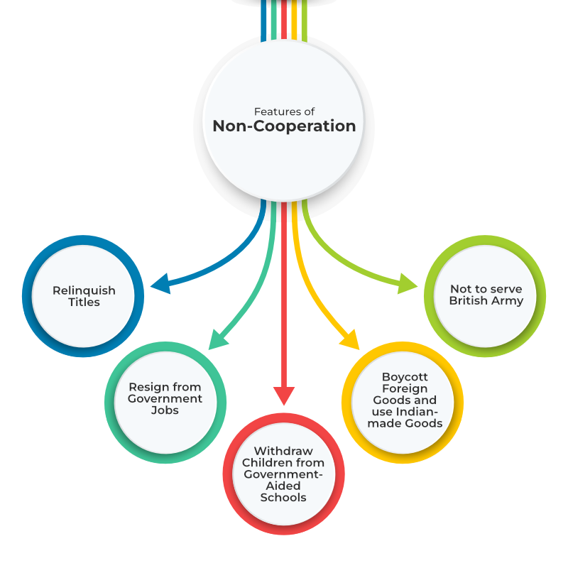
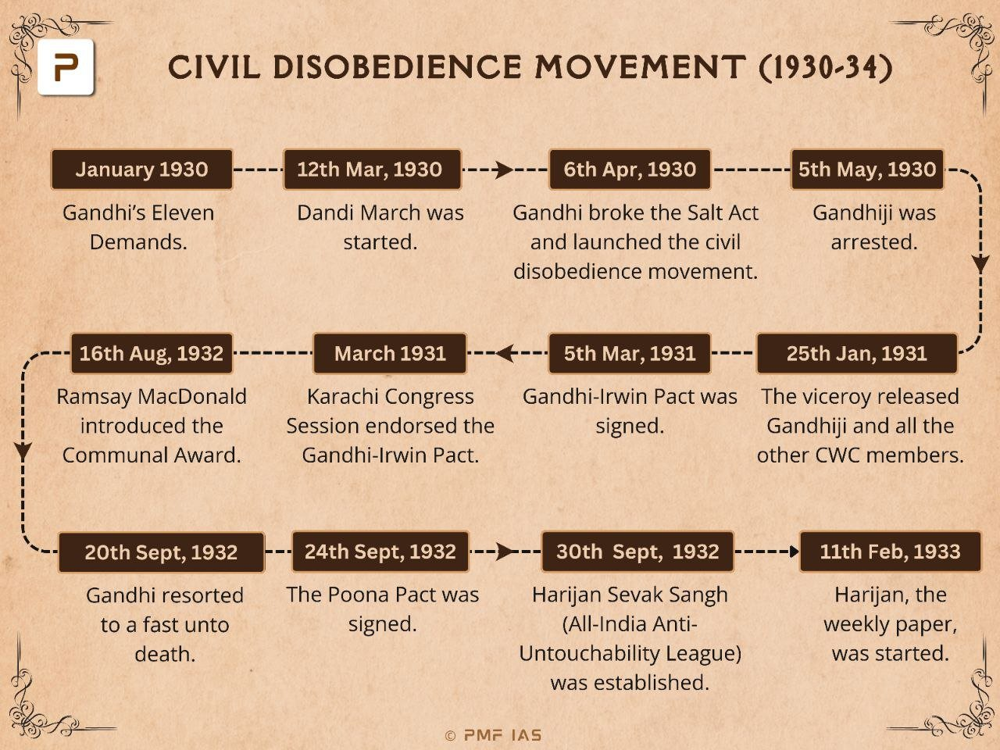
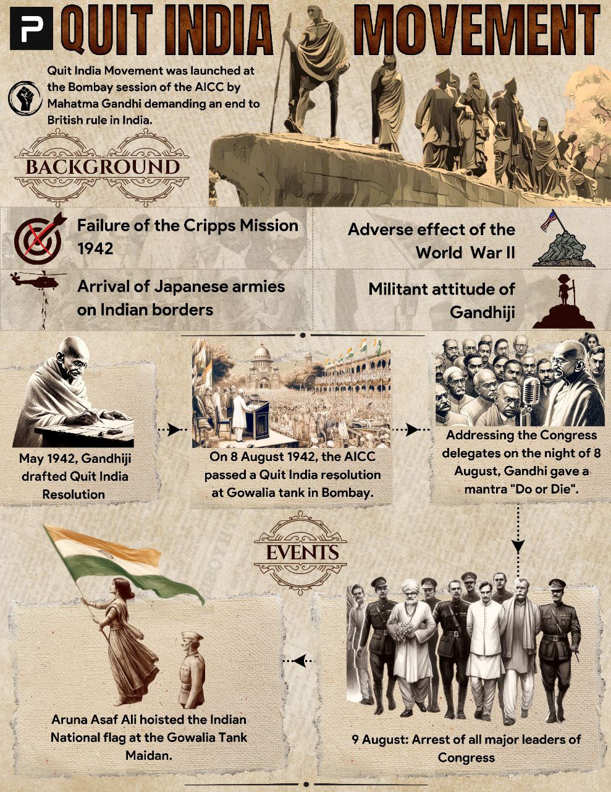

SSC CGL - Detailed Guide 2025
Self-Paced Course
Indian National Movement
Reference: Lucent GK, NCERT Class 6–12
Formation of Indian National Congress (1885)
- Date: 28 December 1885
- Founder: A.O. Hume (British Civil Servant)
- First Session: Bombay
- President: Womesh Chandra Bonnerjee
-
Significance:
- Platform for civil and political dialogue among educated Indians
- Focus on constitutional reforms, Indian representation, and civil rights


Partition of Bengal & Swadeshi Movement (1905)
- Partition Date: 16 October 1905
- By: Lord Curzon
- Reason (official): Administrative convenience
- Real Reason: Divide and rule (Bengal had a strong nationalist base)
-
Reachtion:
- Swadeshi Movement: Boycott of British goods, promotion of Indian products
- Nationalist leaders: Bal Gangadhar Tilak, Bipin Chandra Pal, Lala Lajpat Rai (Lal-Bal-Pal)
Home Rule Movement (1916–1918)
-
Leaders:
- Bal Gangadhar Tilak (Maharashtra)
- Annie Besant (South India)
- Objective: Self-government within British Empire
- Slogan: "Swaraj is my birthright and I shall have it." – Tilak
-
Impact:
- Created national political awareness
- Prepared the ground for future mass movements


Non-Cooperation Movement (1920–22)
- Launched by: Mahatma Gandhi
-
Trigger:
- Jallianwala Bagh Massacre (1919)
- Khilafat Movement (support for Ottoman Caliph)
-
Features:
- Boycott of British institutions: schools, colleges, courts
- Resignation from government posts
- Boycott of foreign goods and titles
- Chauri Chaura Incident (1922): Movement withdrawn after violence
Civil Disobedience Movement (1930–34)
- Started with: Salt March (Dandi March) on 12 March 1930
- Route: From Sabarmati Ashram to Dandi (240 miles)
- Leader: Gandhi
- Objective: Violation of British laws peacefully (especially salt laws)
-
Features:
- Boycott of foreign cloth, refusal to pay taxes
- Breaking salt law by making salt from seawater
-
Round Table Conferences:
- Gandhi attended Second RTC (1931) after Gandhi-Irwin Pact
- Suppressed and re-launched in 1932


Quit India Movement (1942)
- Date: 8 August 1942
- Launched by: Gandhi (All India Congress Committee, Bombay)
- Slogan: “Do or Die”
- Reason: Failure of Cripps Mission
-
Nature
- Mass civil disobedience
- Leaders arrested immediately
- Youth and underground movements active
-
Outcome:
- Brutal repression
- Movement failed but set tone for independence
Quick Revision
| Movement | Year | Leader(s) | Main Features | Trigger |
|---|---|---|---|---|
| INC Formation | 1885 | A.O. Hume | Political forum | Unity among Indians |
| Partition of Bengal | 1905 | Lord Curzon | Swadeshi, Boycott | Divide and Rule |
| Home Rule | 1916 | Tilak, Annie Besant | Demand for self-rule | Growing nationalism |
| Non-Cooperation | 1920 | Gandhi | Boycott institutions | Jallianwala Bagh, Khilafat |
| Civil Disobedience | 1930 | Gandhi | Salt March, Tax refusal | Salt Law |
| Quit India | 1942 | Gandhi | Do or Die | Cripps Mission failure |
Developed By Roopasree Challa
Next
Start Your SSC CGL Journey Now!
Join Courage Library to experience disciplined study and expert support.
Book Your Slot Now!